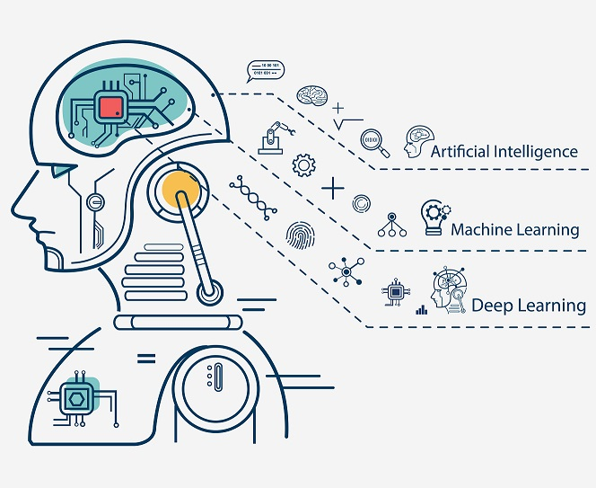

What is software Development?

Software development is a set of activities within computer science which dictates the process of creating, designing and deploying software of many different forms within the industry. This comes in three general catagories:
- System Software - for core function of a computer, such as operating systems and utilities.
- Application Software - to help users complete tasks, such as office suites and media players
- Programming Software - for tools like text editors, compilers and debuggers
This process is generally divided up into larger teams, each playing a key role from the begging design phases to hands on coding and deploying.
Styles of software Development
There are many different methods and styles that can be used to go through the software development process. Here are some:
- Agile Unified Process (AUP) Following the principles:
- Your staff know what they're doing
- Simplicity
- Agility
- Focus on high-value activities
- Tool independence
- You'll want to tailor the AUP to meet your own needs
- Extreme Programming (XP) bases its development on reducing costs of changing software by using multiple, shorter design processes as changes are a natural element of software development
- Scrum is based on breaking up work for smaller teams into timed workloads called sprints - generally 2 weeks - with tracking and replanning in 15 minute daily meetings

What is machine learning?
{kind=link}
Machine learning is the use of statistics to find patterns in very large data sets. This can come in many forms of data found on the internet, such as images, clicks and numbers but also self generated data, such as in reinforced learning.
Machine learning powers many reccomendation based services seen, such as Youtube, Facebook, Alexa and so on. All of these services collect data as you use them to generate a 'user profile' of data that can use machine learning algorithms to predict trends, likes, dislikes and the like. This can be utilised to do things such as reccomending new videos or music to targeted advertisements based on internet traffic. While most of these can be fairly basic it has become so integrated as to be expected seeing it on the most popular services used today.
Types of machine learning
Machine learning generally comes in three different types based on the processing of data and how patterns are formed.
Supervised learning
Supervised Learning is telling the algorithm what pattern to look for in data such as in popular streaming services like Netflix and Youtube - the pattern will be to find similar videos based on the currently watched one. This can be descibed as such that each input of training data also includes a paired desired outcome
Unsupervised Learning
Unsupervised Learning is removing the second input seen in supervised learning and instead trying to create a pattern without being told what to look for. This is mainly achieved via principle componant and cluster analysis and is particularly useful in cyber security.
Reinforcement Learning
Reinforcement learning is a form of learning based on trial and error. On each run the current algorithm adapts based on what it did well and what it did badly based on scores. This can be cycled using things like genetic algorithms to cull the weakest of the dataset and form a new generation based on the strongest with some random variations on neural nodes.